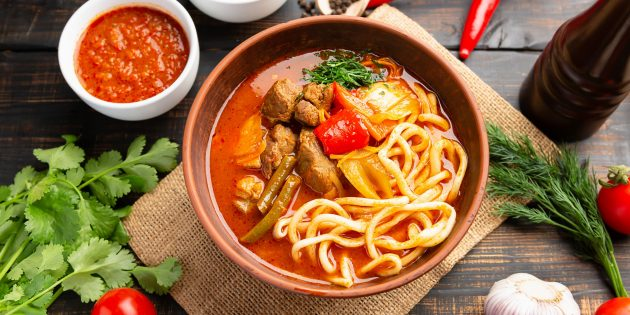

Lagman ingredients
- 2 tablespoons olive oil
- 1 onion, finely chopped
- 1/2 pound beef chuck, cut into strips
- 1 teaspoon ground black pepper
- 1 teaspoon ground comin
- 2 tablespoons tomato paste
- 1 carrot, cut into thin strips
- 1 green bell pepper, cut into 1-inch strips
- 3 small potatoes, cubed
- 1/2 cup thinly sliced celery
- 8 cups water
- 2 teaspoons salt
- 1/2 cup finely chopped parsley
- 3 large cloves garlic, minced
- 2(8ounce) packages thin Chinese noodles
Directions, by steps
-
Heat oil in a large pot over high heat.
Reduce heat to medium-high;
cook and stir onion in hot oil until golden, 3 to 5 minutes.
Stir in beef strips, cumin, and black pepper;
cook until beef is browned, about 5 minutes.
Stir in tomato paste and cook for 2 to 3 minutes.
-
Stir carrot into the pot;
cook until coated with tomato paste, 2 to 3 minutes.
Add green bell pepper; cook for 1 minute.
Add potatoes and celery; cook for 5 minutes.
Pour in water; bring to a boil. Season water with salt.
Reduce heat to low and simmer soup until potatoes are soft,
about 40 minutes.
-
Stir parsley and garlic into the soup.
Simmer until garlic is soft, 10 to 15 minutes.
-
Bring a large pot of lightly salted water to a boil.
Cook noodles in boiling water, stirring occasionally,
until tender yet firm to the bite, 3 to 5 minutes.
Rinse and drain well. Divide among serving bowls.
Ladle hot soup over noodles.
To main page